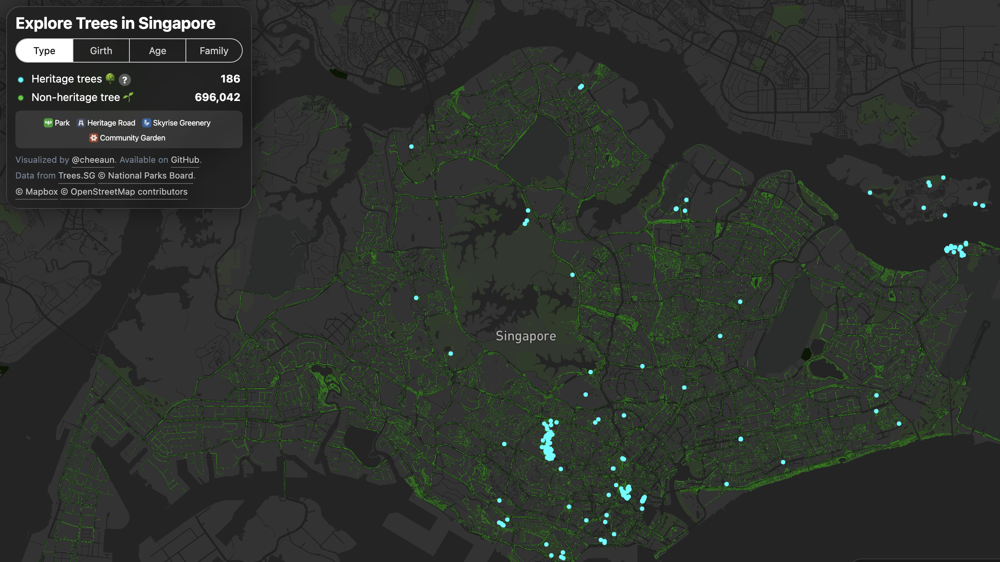
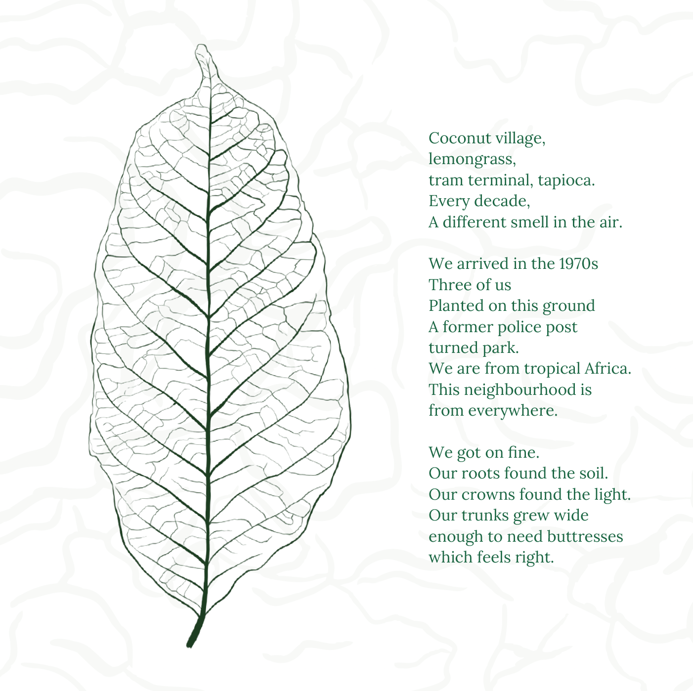

Heritage Trees
Singapore's silent witnesses Conceptual project Boxed publication, poems, photography, film and audio map.
01
Concept
Cities tell their own history: through buildings, through street names, through museums that decide what gets kept and what gets cleared.
But there are witnesses that were never consulted.
Singapore's Heritage Trees have stood in the same places while everything around them changed hands, changed names, changed beyond recognition. They predate the policies that now protect them. Some were already old when the decisions that shaped the city were being made in rooms nearby. They are not symbols — they are living organisms, sometimes centuries old, with no way to speak and no one particularly asking them to.
Rooted in History is an attempt to ask.

02
The Thinking
Giving a tree a voice can go wrong in two directions: too scientific, and it becomes a plaque; too documentary, and it becomes a museum label — the exact register the project is arguing against. So the voice is an imagined interior. Eight trees, eight poems, each written in the first person and moving through time: the ground it grew from, the things it witnessed, the city it now looks out at. That left one problem. A poem can only describe the past. The present had to be experienced, not read — which is what sends the visitor outside, to the tree itself.


03
Process
Site visits to all eight trees across Singapore. Archival research into how each neighbourhood transformed around them. Original macro photography of leaves — vein structures shot close enough to read like maps or aerial terrain — which became the visual language of the whole system.